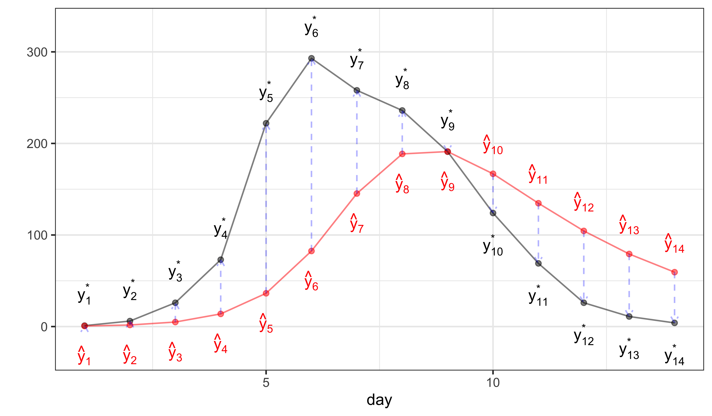

Deterministic latent process models and their role in benchmarking POMP models
Produced in R version 4.3.2.
Why fit a deterministic process model?
We’re focusing on biological dynamic systems, which are typically far from perfectly predictable.
Deterministic latent process models are perfectly predictable, given the parameter values and initial conditions. One might therefore expect that these determinstic process models are problematic as statistical descriptions of unpredictable systems.
Exception: an imperfectly measured chaotic system is both deterministic and unpredictable. However, there has been little success using this class of models for fitting biological systems.
Exception: for short time series, the role of dynamic stochasticity may be negligible compared to measurement error, parameter uncertainty and uncertainty about initial values.
Deterministic latent process models are useful as a benchmark when fitting POMP models.
Benchmarking
Recall that it is statistically meaningful to compare likelihoods between entirely different classes of models for the same data, for example by AIC.
A benchmark is a simple model that is fitted with the goal of providing a sanity check on a more sophisticated model. We believe that the complex model should fit the data better, but we want to check!
Some simple benchmarks can be constructed with relatively little effort:
independent, identically distributed observations.
ARMA models are appropriate for time series which appear stationary, perhaps after differencing.
Regression models, including nonlinear regression models such as ordinary differential equation models for compartment models.
The likelihood for a deterministic latent process
Suppose that the latent process is deterministic. In our POMP notation, this lets us write the latent process as \[X_{n}=x_n(\theta),\] so that the latent process is a known and non-random function of \(\theta\) for each \(n\). What is the likelihood?
Since the probability of the observation, \(Y_n\), depends only on \(X_n\) and \(\theta\), and since, in particular \(Y_{m}\) and \(Y_{n}\) are independent given \(X_{m}\) and \(X_{n}\), we have \[\mathcal{L}(\theta) = \prod_{n} f_{Y_n|X_n}\big(y_n^*;x_n(\theta),\theta\big)\] or \[\ell(\theta) = \log\mathcal{L}(\theta) = \sum_{n} \log f_{Y_n|X_n}\big(y_n^*;x_n(\theta),\theta\big).\] The following diagram illustrates this.
In this diagram, \(\hat y_n\) refers to the model prediction, \(\hat y_n = \mathbb{E}\left[{Y_n \vert X_n=x_n(\theta)}\right]\), and \(y_n^*\) is data.